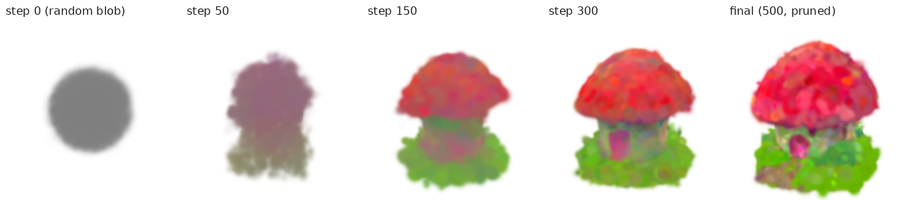

A2 MVP: one prompt → SDS from a frozen 2D diffusion model → optimise a NeRF → render novel views in an interactive viewer.
Built: the same diffusion-guided loop running for real on an NVIDIA A100, but the 3D representation is explicit 3D Gaussians
optimised with the official DreamGaussian code (commit 69a3c70), not a NeRF. Reason: a from-scratch SDS-NeRF needs
long optimisation and much more debugging for a one-person project; DreamGaussian's rasterizer makes a 500-step run take ≈47 s, so I could
iterate and build the studio, monitor and stress test around it. Upstream code is used unmodified (one build-fix include); my own work is the
instrumentation wrapper, the WebGL2 splatting viewer, the studio server/UI, the benchmark and the capture pipeline.
| A2 feature (MoSCoW) | Status | Evidence |
|---|---|---|
| MUST text prompt; frozen diffusion prior; random cameras; SDS optimisation | done | SD 2.1-base fp16, CFG 100, annealed t 980→20; results/*/training.log |
| MUST NeRF + differentiable volume rendering | changed | 3D Gaussians + differentiable CUDA rasterizer (DreamGaussian) |
| A2 “midterm proof”: non-zero SDS gradients reach the 3D parameters | done | per-step gradient norms of position/colour/opacity/scale/rotation all > 0 for all 500 steps (metrics.jsonl) |
| MUST interactive novel-view viewer | done | own WebGL2 splat viewer (orbit/zoom, splat-scale), CUDA turntables |
| SHOULD progress visualisation; seed/guidance/steps controls; save views | done | live loss/gradient/#Gaussian charts, snapshot scrubber, 8 views + MP4 per run |
| COULD 3DGS; mesh extraction; several variations | done | 3DGS is now core; textured OBJ via upstream export; 5 prompts |
| COULD VSD comparison · stage-2 mesh refinement | cut | not implemented / not run |
| prompt (500 SDS steps, CFG 100, seed 0) | SDS time | total incl. mesh | final #Gaussians | peak VRAM |
|---|---|---|---|---|
| a small red mushroom house | 46.5 s | 123 s | 311,695 | 4.35 GB |
| a ripe pineapple | 46.3 s | 103 s | 293,427 | 4.81 GB |
| a wooden treasure chest | 46.9 s | 142 s | 298,342 | 4.33 GB |
| a cute corgi puppy | 46.7 s | 124 s | 312,254 | 4.34 GB |
| a delicious hamburger | 45.7 s | 122 s | 281,563 | 4.31 GB |

CUDA rasterizer, forward pass along a fixed 360° orbit, 120 frames after warm-up, synchronised timing, peak VRAM from PyTorch, dedicated
A100 (scripts/benchmark_renderer.py → evidence/performance.csv). Count axis = each Gaussian cloned k× with jitter, at 512².
| resolution (311,695 Gaussians) | FPS | peak VRAM |
|---|---|---|
| 256² | 314.7 | 0.14 GB |
| 512² | 368.2 | 0.22 GB |
| 1024² | 175.1 | 0.50 GB |
| 2048² | 57.8 | 1.50 GB |
| 4096² | 16.8 | 5.30 GB |
| #Gaussians (512²) | FPS | peak VRAM |
|---|---|---|
| 311,695 | 354.5 | 0.22 GB |
| 1,246,780 | 144.6 | 0.78 GB |
| 4,987,120 | 44.8 | 3.02 GB |
| 19,948,480 | 11.7 | 11.97 GB |
| 39,896,960 | 5.5 | 23.90 GB |
| 79,793,920 | CUDA OOM (failure point) | |
The A2 viewer target (≥30 FPS) holds up to 2048² and ≈5 M Gaussians; the hard limit is memory (OOM at ≈80 M Gaussians). The browser viewer has its own ×1–×16 sweep in the studio, but on the server it ran on a GPU shared with another user's job, so I treat it as indicative only.
stabilityai repo now returns HTTP 401, so I used a mirror of the same weights (documented).simple-knn missing <cfloat>
(gcc 13); CUDA runtime headers only under targets/ on this server (CPATH); peak VRAM of 37 GB that turned out to be
cudnn.benchmark switched on by the GUI seeding helper (fixed → 4.4 GB, the aborted log is kept); headless Chrome losing the WebGL context
on Vulkan (switched to GL-EGL). It also wrote most of the wrapper, viewer, studio, benchmark and capture code.main2.py).Linux + NVIDIA GPU (≥8 GB). bash scripts/setup_env.sh → conda activate dreamgaussian →
GPU=0 bash scripts/run_text_to_3d.sh "a small red mushroom house" mushroom_house → GPU=0 python server.py and open
http://127.0.0.1:8549. Full instructions, versions and evidence are in the repository README and evidence/.
Demo video: 179.6 s, real-time screen capture of the studio (two waits fast-forwarded 8× and labelled on screen).